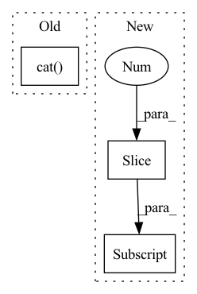

Pattern ID :1465
Before Change
rel_embedded = self.relation_embeddings(relation_batch).view(-1, 1, self.img_height, self.img_width)
// batch_size, num_input_channels, 2*height, width
stacked_inputs = torch.cat( [e1_embedded, rel_embedded], 2)
// batch_size, num_input_channels, 2*height, width
stacked_inputs = self.bn0(stacked_inputs)
After Change
heads = batch[:, 0:1]
relations = batch[:, 1:2]
tails = batch[:, 2:3]
// batch_size, num_input_channels, width, height
heads_embs = self.entity_embeddings(heads).view(-1, 1, self.img_height, self.img_width)
relation_embs = self.relation_embeddings(relations).view(-1, 1, self.img_height, self.img_width)In pattern: SUPERPATTERN
Frequency: 3
Non-data size: 3
Instances Fragment ID: 4252626
Project Name: pykeen/pykeen
Commit Name: e310dc04ccd0763bef25540fb0a19a7423a27a94
Time: 2018-09-19
Author: ali-mehdi@live.de
File Name: src/kg_embeddings_model/conv_e.py
M Class Name: ConvE
N Class Name: ConvE
M Method Name: forward(3)
N Method Name: forward(3)
M Parent Class: nn.Module
N Parent Class: nn.Module
M File Name: src/kg_embeddings_model/conv_e.py
N File Name: src/kg_embeddings_model/conv_e.py
M Start Line: 116
M End Line: 151
N Start Line: 114
N End Line: 153
Before Change
for idx in range(self.num_d3blocks):
if idx != 0:
x = torch.cat( stacked, dim=1)
x = self.net[idx](x)
stacked.append(x)
output = torch.cat(stacked[1:], dim=1)After Change
x = self.band_split(input)
for idx, key in enumerate(self.bands[:-1] ):
_x = self.net[key](x[idx])
stacked.append(_x)
Fragment ID: 4252630
Project Name: tky823/dnn-based_source_separation
Commit Name: 628cce12054e3d56f6fd72af21cdb87a520f32ae
Time: 2021-03-12
Author: 40362510+tky823@users.noreply.github.com
File Name: src/models/d3net.py
M Class Name: D3Net
N Class Name: D3Net
M Method Name: forward(2)
N Method Name: forward(2)
M Parent Class: nn.Module
N Parent Class: nn.Module
M File Name: src/models/d3net.py
N File Name: src/models/d3net.py
M Start Line: 59
M End Line: 70
N Start Line: 45
N End Line: 59
Before Change
if self.outermost:
return self.model(x)
else: // add skip connections
return torch.cat( [x, self.model(x)], 1)
After Change
output = self.model[0](x)
return_feats = feats + [output]
for layer in self.model[1:] :
if isinstance(layer, UnetSkipConnectionBlock):
output, return_feats = layer(output, return_feats)
else: Fragment ID: 4252633
Project Name: jolibrain/joligan
Commit Name: 9f1109e5b2dc49370abca391e67ab0a1de845b6e
Time: 2022-06-16
Author: pierre-nicolas.suau@jolibrain.com
File Name: models/modules/unet_architecture/unet_generator.py
M Class Name: UnetSkipConnectionBlock
N Class Name: UnetSkipConnectionBlock
M Method Name: forward(3)
N Method Name: forward(2)
M Parent Class: nn.Module
N Parent Class: nn.Module
M File Name: models/modules/unet_architecture/unet_generator.py
N File Name: models/modules/unet_architecture/unet_generator.py
M Start Line: 152
M End Line: 155
N Start Line: 171
N End Line: 184